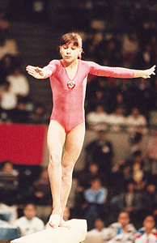

Yulia Kut (USSR)
1987 Chunichi Cup AA Silver
Medalist

Yulia was born in 1974 in Lvov (Ukrainian SSR) and trained at the Army Club.
Competition Results
1986
Jr. Friendship Tournament (Druzhba): 1st Team, 2nd AA, 1st UB, 1st FX
Jr. GDR-USSR Dual Meet: 1st Team, 6th AA
1987
Chunichi Cup: 2nd AA, 3rd V, 3rd UB, 3rd B, 3rd FX
Jr. Friendship Tournament (Druzhba): 2nd Team, 5th AA, 3rd UB, 3rd FX, 4th
B
Riga International: 5th AA
USA-USSR Dual Meet: 1st Team, 5th AA
1988
Chunichi Cup: 4th AA, 2nd UB, 2nd B
FRG-USSR Dual Meet: 1st Team, 1st AA
Jr. European Championships: 6th AA, 2nd FX, 4th UB
Jr. GDR-USSR Dual Meet: 1st Team, 1st AA, 1st UB, 2nd B
Tokyo Cup: 2nd UB
1989
Moscow News: 2nd AA, 1st UB, 2nd FX
USSR Championships: 1st UB, 1st FX, 2nd B
USSR Cup: 3rd Team, 4th AA
World Sports Fair: 1st Team, 2nd AA, 1st UB, 2nd B
1990
Dutch Open: 1st AA, 1st UB, 1st FX
US Olympic Cup: 4th AA
USSR Championships: 13th AA, 2nd B, 6th FX, 7th UB
USSR Cup: 5th AA, 1st UB, 1st FX, 2nd B
1991
BEL-FRA-ROM-USSR: 7th AA
This page was created on September
28, 2002 and was last updated on August 25, 2007.
© Gymn Forum